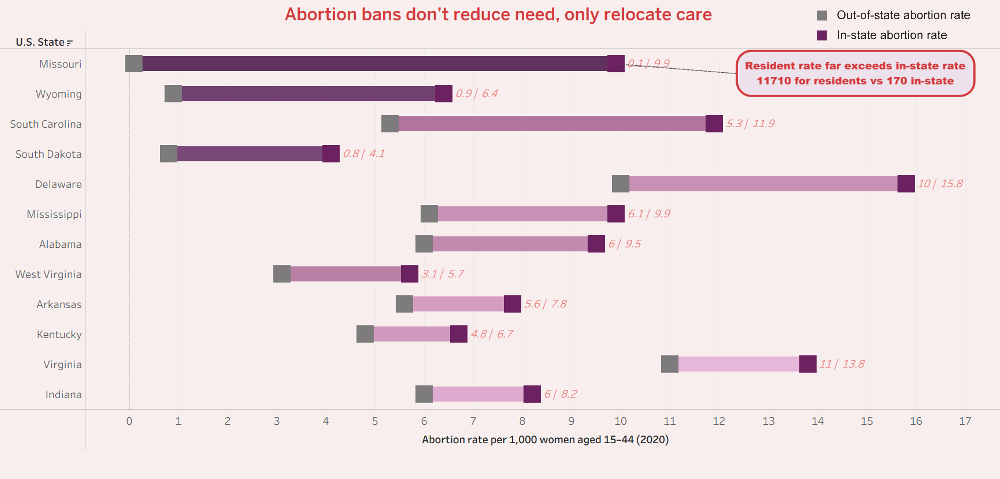
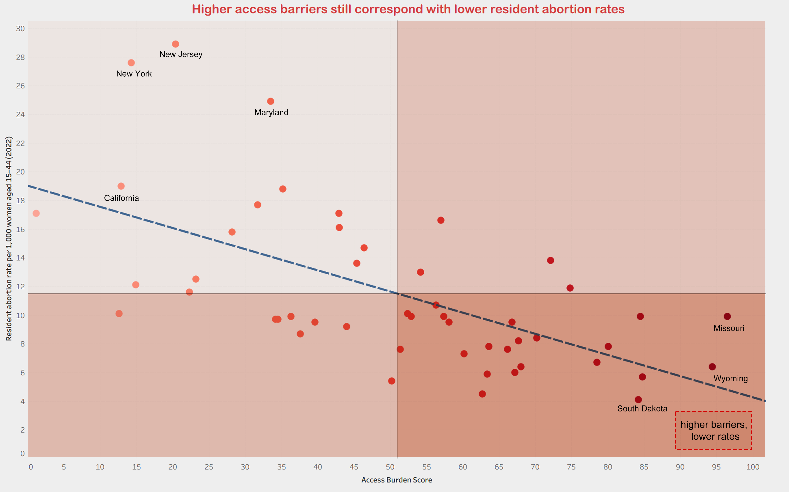
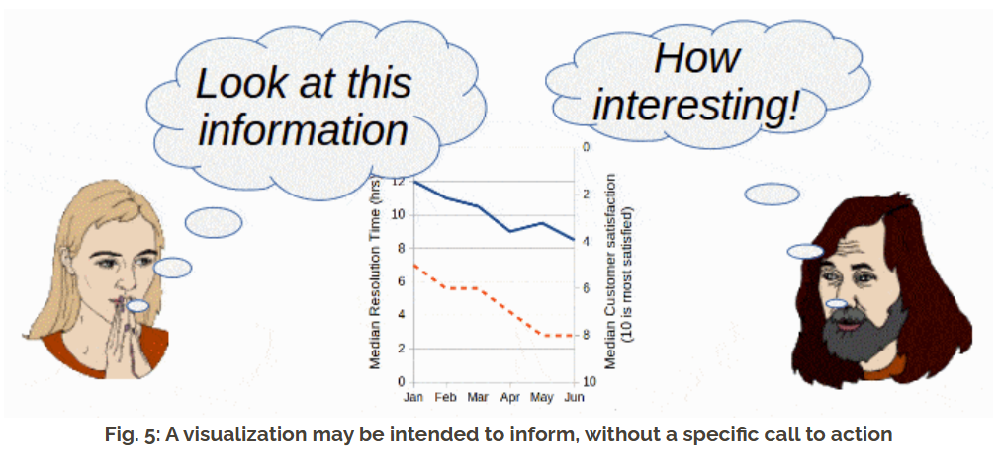
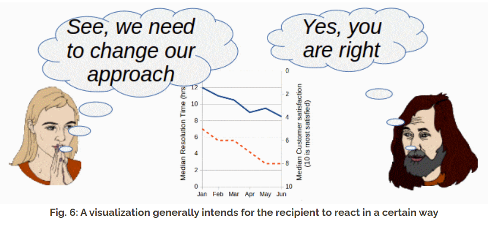
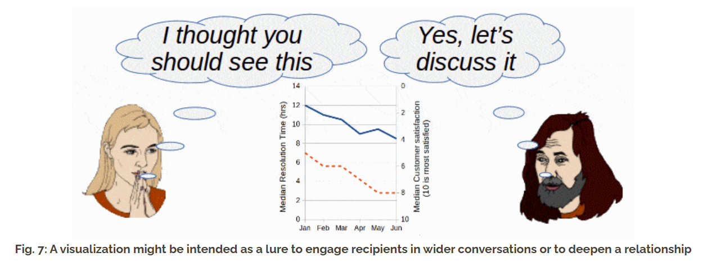
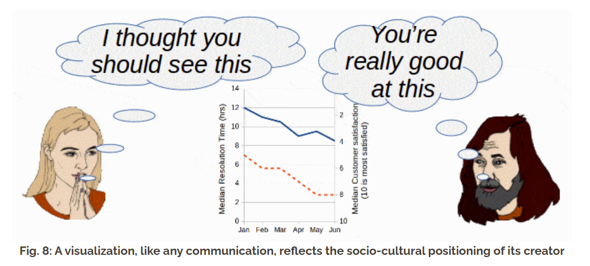

Persuasive or Deceptive Visualization?
This report uses the same Guttmacher Institute state-level abortion dataset to construct two opposed visual arguments. Rather than treating visualization as neutral reporting, I approach it as a rhetorical practice shaped by selection, transformation, weighting, ordering, color hierarchy, and framing. What interested me most in this assignment was not simply whether a chart could be made convincing, but how easily conviction can emerge from choices that still feel technically reasonable.
Proposition
Restricting abortion clinic access does not make abortion need disappear; it displaces care across state lines.
Visualization 1 — For the Proposition
The first visualization is designed to challenge a reading of the data that initially appears straightforward but, to me, feels incomplete. If a viewer only looks at abortions recorded inside a state, low values can easily be interpreted as evidence that abortion restrictions have successfully reduced abortion itself. I wanted to resist that conclusion. Instead of accepting in-state counts as the whole story, this chart foregrounds the gap between abortions performed within a state and abortions obtained by that state’s residents. That gap matters because it changes the emotional and political meaning of the numbers. What first looks like decline may instead be displacement.

How this visualization was made persuasive
This figure persuades by changing the viewer’s sense of what should count as the meaningful measure. A low in-state abortion rate can seem reassuring, controlled, even successful, especially if it is viewed quickly or in isolation. But once that value is placed beside the abortion rate among residents of the same state, the story starts to shift. The chart invites the reader to see that abortion need may persist even when care is no longer recorded locally. I found this move persuasive precisely because it does not require falsifying the data. It only requires asking the reader to look at a different relationship within the same data.
At the same time, I do not want to pretend the chart is innocent. It is persuasive because I deliberately made some relationships much easier to see than others. I centered the states where the discrepancy is strongest, sorted them so the pattern accumulates from top to bottom, and visually emphasized the endpoint that I wanted the reader to trust most. In other words, the figure contains both an earnest analytical comparison and a strategic staging of that comparison. That tension became one of the most important lessons of the assignment for me: a visualization can reveal something real while still guiding the viewer very carefully toward one interpretation of that reality.
- Score: +1.5 Comparing resident abortion rate with in-state abortion rate. This is the central analytical decision in the project, and I regard it as mostly earnest. The two measures answer genuinely different questions: one describes where abortions occurred, while the other describes abortion rates among residents regardless of where care was obtained. Placing them in the same frame reveals that a decline in recorded in-state abortions is not the same thing as a decline in abortion need. This comparison is persuasive, but in a way that still feels substantively justified.
- Score: -1.5 Filtering to the states with the largest mismatch. I did not show all states with equal emphasis. Instead, I selected the cases where the difference between resident and in-state abortion rates is strongest, because those cases support the proposition most clearly. This is rhetorically effective because it compresses the reader’s attention around the most dramatic evidence. It is also selective, because states with smaller gaps or more ambiguous patterns are pushed out of view and therefore out of the viewer’s interpretive horizon.
- Score: -1 Sorting by gap size rather than alphabetically or geographically. Ordering the states from the largest mismatch downward turns what could have been a loose set of examples into what feels like a ranked and systematic pattern. The move is subtle, but it matters. A sorted list produces momentum. It encourages the reader to experience the chart as cumulative evidence rather than as a neutral catalog of places. In that sense, the ordering is not just organizational; it is argumentative.
- Score: -0.5 Using a span-based encoding rather than detached bars or isolated points. The span is analytically useful because it makes the discrepancy between the two measures immediately legible. The eye can grasp difference as distance without extra cognitive work. At the same time, long horizontal gaps feel emotionally consequential in a way that separate marks might not. This choice therefore sits in a mixed zone for me: it is structurally honest, but rhetorically stronger than it first appears.
- Score: -1.5 Using color hierarchy and an interpretive title. I intentionally made the resident-related endpoint darker and visually heavier so the reader’s eye would be drawn toward the measure I wanted to count as the more truthful indicator of need. The title then extends that framing by implying that the pattern should be understood as displacement rather than reduction. That interpretation is plausible, but it is still an interpretation. The chart does not merely show a gap; it gently tells the viewer how to feel about that gap before they have fully evaluated it themselves.
Visualization 2 — Against the Proposition
The second visualization argues against the proposition by changing the question itself. Rather than emphasizing the mismatch between where abortions are recorded and where residents seek care, it asks whether states with heavier access barriers still show lower abortion rates among their own residents. To make that argument possible, I created a calculated field—the Access Burden Score— that compresses several dimensions of restriction into one explanatory variable. This move makes the chart feel cleaner, calmer, and more statistically coherent, but it also gives my own interpretive choices much more power.

How this visualization was made persuasive
This chart persuades not by directly disproving the first one, but by redefining what kind of explanation should matter most. In Figure 1, the visual drama came from a discrepancy between two measures. In Figure 2, that comparison disappears almost completely. Instead, I ask the reader to view resident abortion rate as the main outcome and to accept “burden” as the main explanatory cause. That shift changes the affect of the chart. It feels less like an argument about movement and more like an argument about structure. It feels less like something to notice and more like something already organized, summarized, and explained.
Access Burden Score = 0.5 × (% of women ages 15–44 living in a county without a clinic) + 0.3 × (% of counties without a known clinic) + 0.2 × (% of residents obtaining abortions who traveled out of state)
Constructing this field was the most consequential transformation in the project. I weighted the first component most heavily because it most directly reflects how much of the reproductive-age population lacks local clinic access. I weighted county-level clinic absence second because it captures geographic scarcity, but it is less sensitive to where people actually live. I weighted out-of-state travel third because it is partly an outcome of burden rather than a pure precondition, yet it still strengthens the sense that access barriers have material consequences. On one level, this felt like a sincere analytical move. No single raw variable seemed sufficient to describe abortion access. But on another level, the field is clearly authored. I decided what belonged inside the category of burden, what counted more, and what counted less. In that sense, I was not only measuring the world; I was building the lens through which the world would be seen.
- Score: +0.5 Constructing a weighted Access Burden Score. I created a calculated field rather than relying on any one raw variable. The score combines % of women ages 15–44 living in a county without a clinic, % of counties without a known clinic, and % of residents obtaining abortions who traveled out of state, weighted at 0.5, 0.3, and 0.2 respectively. This is analytically meaningful because it compresses several relevant dimensions of access into a single interpretable axis. It is also rhetorical because the category itself, and the weighting inside it, reflect my own judgment about what should count most as restriction.
- Score: -1 Making population exposure the dominant component. By assigning the largest weight to the share of women ages 15–44 living in counties without a clinic, I made the burden score feel people-centered rather than merely territorial. This is defensible, since access ultimately affects people rather than counties, but it also gives the variable a stronger moral and substantive legitimacy. That makes the chart easier to trust and therefore easier to believe.
- Score: -1.5 Using resident abortion rate as the only outcome variable. This is one of the most important persuasive moves in the chart because it removes the in-state versus resident comparison that drove Figure 1. Once that displacement frame disappears, the reader is encouraged to ask a different question: not where abortions happened, but whether residents living under greater burdens still exhibit lower abortion rates overall. The argument changes because the frame changes.
- Score: -1 Adding a regression line to stabilize the story. The regression line does not falsify any point, but it turns a scattered cloud into a more legible directional relationship. It encourages the reader to perceive trend before noise, coherence before exception. This is a common statistical device, yet it is also a rhetorical one: it calms uncertainty and gives the impression that the anti-position has a stable backbone.
- Score: -1.5 Directing attention to the lower-right quadrant through color and framing. I deliberately darkened the lower-right quadrant and strengthened the points located there because that region best supports the anti-claim: higher burden, lower resident abortion rate. The data themselves are unchanged, but visual hierarchy makes that corner feel like the chart’s natural conclusion. This is exactly the kind of move that made the assignment so interesting to me: emphasis alone can make an interpretation feel more inevitable than it really is.
Final Reflection
What changed between these two visualizations was not the dataset, but the narrative logic I asked the dataset to support. In the first figure, I treated the gap between resident abortion rate and in-state abortion rate as the most meaningful signal. That choice made displacement visible. It encouraged the reader to see that a low in-state count does not necessarily mean low abortion need, but may instead reflect the movement of care across state lines. In the second figure, I abandoned that comparison and replaced it with a different explanatory frame: a weighted burden score plotted against resident abortion rate. The result was not a simple correction of the first chart, but a reorganization of what counted as evidence. The same data supported opposed narratives because each chart elevated a different structure while allowing other structures to recede.
The calculated field in Figure 2 was especially revealing to me. At first, building it felt intellectually honest. Access is not one thing, and I did not want to reduce it to a single raw variable if that variable only captured one part of the problem. Combining several indicators into one score seemed like a reasonable way to make a complicated condition more legible. But the more I worked on it, the more I realized that legibility is never neutral. I had to decide which variables belonged in the score, which ones did not, and how much conceptual weight each one should carry. Even when those decisions were defensible, they were still my decisions. The field did not simply measure abortion burden; it expressed my own model of what abortion burden ought to mean.
This assignment therefore changed the way I think about visual honesty. Before, I tended to imagine deception as something obvious: truncated axes, fake scales, hidden data, or direct manipulation. But this exercise made the problem feel more subtle and, honestly, more unsettling. Some of the most persuasive choices I made were not false at all. They were choices of emphasis, ordering, titling, framing, annotation, and color hierarchy. I darkened the marks I wanted viewers to notice first. I selected the states that made my argument strongest. I wrote captions and titles that did not merely describe the chart, but gently interpreted it in advance. None of these moves invented numbers, yet all of them shaped the story. That is what made the boundary between persuasion and deception feel much less stable than I had assumed.
I also became more aware that visualizations do not simply present information; they imagine a viewer and anticipate a response. While working on these charts, I was never just arranging marks on a page. I was thinking about what I wanted the reader to feel was obvious, what I wanted them to question, what I hoped they would notice first, and what interpretation I wanted to linger after the page was closed. In that sense, each visualization contained an implied audience and an intended response. That realization made the ethical stakes feel more personal. The question is not only whether a chart is accurate in some narrow technical sense, but whether its rhetoric becomes so naturalized that the viewer forgets they are being guided at all.
The images below helped me articulate that feeling more clearly. They suggest that visualization is not only a vehicle for information, but also a medium of address. A chart can inform, persuade, provoke, reassure, accuse, simplify, or organize discussion. It can also reflect the social and political position of the person who made it. Once I started thinking this way, I could no longer imagine my own charts as neutral containers of evidence. Each one was selective. Each one carried a point of view. Each one made some readings easier and others harder.
My final takeaway is not that persuasion should be removed from visualization, because I no longer believe that is possible. Every chart involves selection, transformation, and emphasis. The more meaningful ethical question is whether those choices remain visible enough that the reader can still sense their contingency. A visualization becomes more troubling when its rhetoric hides itself so successfully that interpretation starts to feel inevitable. For me, then, ethical visualization is not the absence of argument. It is the willingness to argue without pretending that one’s framing is simply the world speaking for itself.




My takeaway from this assignment is that ethical visualization is not the absence of persuasion, but the disciplined use of it. I no longer think the most important question is whether a chart is biased in the abstract, because every act of selection, transformation, aggregation, and emphasis introduces perspective. The more useful question is whether the designer leaves enough of the data visible for alternative interpretations to remain imaginable, or whether the chart closes down ambiguity so aggressively that its rhetoric begins to masquerade as inevitability.
That is why several of my choices above are scored as mixed rather than purely deceptive. A calculated field, a composite index, or a comparison between two measures can be analytically sincere and strategically useful at the same time. The ethical problem emerges not from the existence of framing, but from how much that framing conceals its own contingency. In that sense, the line between acceptable persuasion and misleading design is real but unstable: less a fixed border than a responsibility that must be renegotiated each time we turn data into a visual argument.